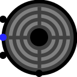

Buzzer
Buzzer
| Librairie : | Input/Output Extra |
| Introduction : | 2.15 dans Logisim ITA Component |
| Apparence : |  |
Comportement
Ce composant permet de générer un son sur les hautparleurs de votre système. Une des entrées définit la fréquence, une autre le volume et la dernière active ou désactiver le son. Il est possible de choisir la forme d'onde en paramétrant l'attribut Forme d'onde.
Broches
- Au nord
- Bus d'entrée : Rapport cyclique - Valeur numérique non signée qui déterminera le rapport cyclique de l'onde. Largeur de donnée en bit 8.
- A l'ouest en haut
- Bus d'entrée : Fréquence - Valeur numérique non signée qui déterminera la fréquence du son en Hz ou dHz en accord avec la propriété Fréquence. Largeur de donnée en bit 14.
- A l'ouest au centre
- Entrée : Select - Si cette entrée est à 1 le son est activé et à 0 il est stoppé. Largeur de donnée 1.
- A l'ouest en bas
- Bud d'entrée : Volume - Permet de régler le volume du son. La largeur de donnée est définie par l'attribut Largeur de donnée volume.
Attributs
Lorsque le composant est sélectionné ou en cours d'ajout, les touches fléchées modifient son attribut Orientation.
- Orientation
- L'emplacement des broches d'entrée par rapport au composant.
- Sélectionner l'emplacement
- L'emplacement de la broche Rapport cyclique par rapport aux autres broches.
- Fréquence
- Définis la fréquence du son en Hertz ou décihertz en en accord avec la propriété Fréquence. La valeur minimale est 20Hz et maximal 20'000Hz.
- Largeur de donnée volume
- La largeur de donnée en bit du bus de réglage du volume.
- Étiquette
- Le texte de l'étiquette associée au composant.
- Police de l'étiquette
- La police avec laquelle l'étiquette doit être rendue.
- Type de signal
- Permets de sélectionner la forme d'onde du signal. Les choix sont : sinusoïdal, carré, triangulaire, dent de scie, bruit blanc.
- Canal
- Permets la sélection des canaux de sortie, gauche, droite ou les deux.
- Degré de lissage
- Niveau du filtre passe-bas appliqué au signal.
- Fenêtre de lissage
- Nombre d'échantillons nécessaire au calcul du filtre.
Comportement de l'outil pousser
Aucun.
Comportement de l'outil texte
Permets de modifier l'étiquette associée au composant.
Retour à Référence de la bibliothèque